SkyrimSE 安装 mod 教程
游戏本体
最重要的当然是需要一个正版的游戏本体。
安装时不要在语言一栏中选择“繁体中文”，因为中文版的游戏版本是比较低的。我们应该选择英文进行安装。
Mod 工具
为了方便、安全地安装和卸载 mod，我们需要一个叫做 Mod Organizer 2 的工具，一般直接叫它 MO。
安装完毕后，我们打开软件，会提示需要创建一个游戏实例。
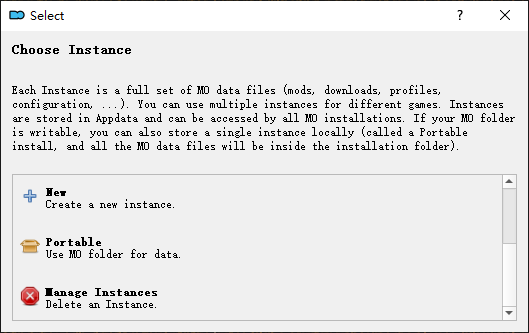
那么我们直接新建实例并选择 SkyrimSE 这个选项。
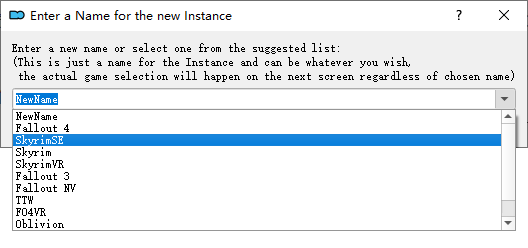
理论上来说 MO 会自动扫描出我们下载好的游戏本体的位置，如果没有的话，手动添加路径。
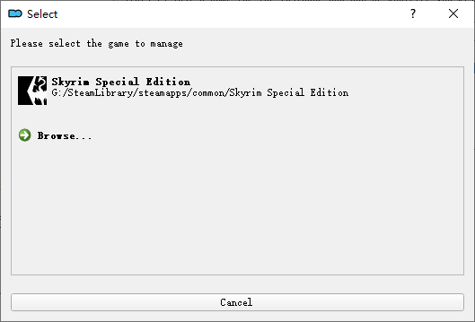
如果一切顺利，这时候界面应该是像下面一样：
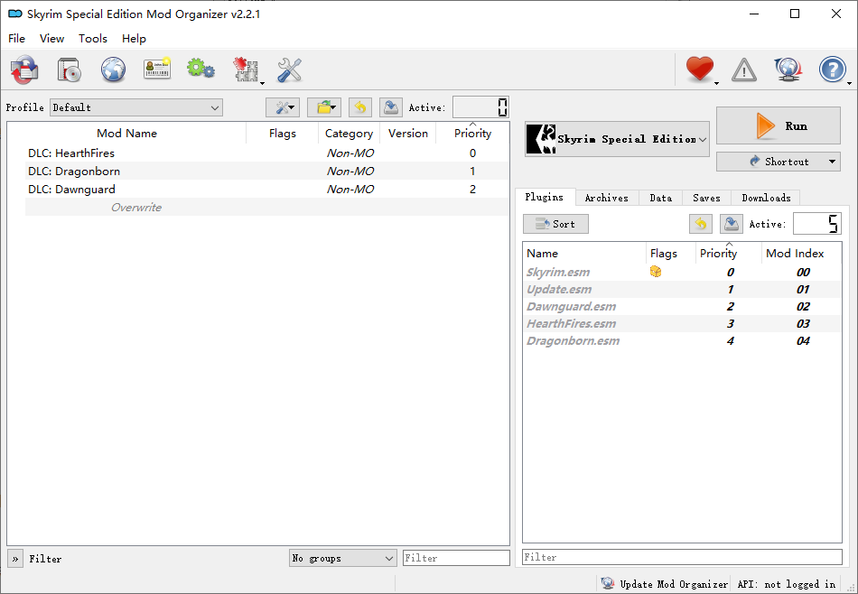
在右上角点击 Run，就可以在加载 mod 的环境下启动游戏（当然我们现在还未添加任何东西）。
N 网
Nexus Mods，是一个很有名的汇集各个游戏 mod 的网站。虽然有很多其他网站，比如说 9dm，但我还是更推荐直接在 N 网上寻找 mod，因为它和 MO 能够配合得很好。
在 N 网注册了账户后，就能愉快地下载 mod 啦。
为了更加便捷的下载，我们打开 MO 并在设置中登录 N 网账号。
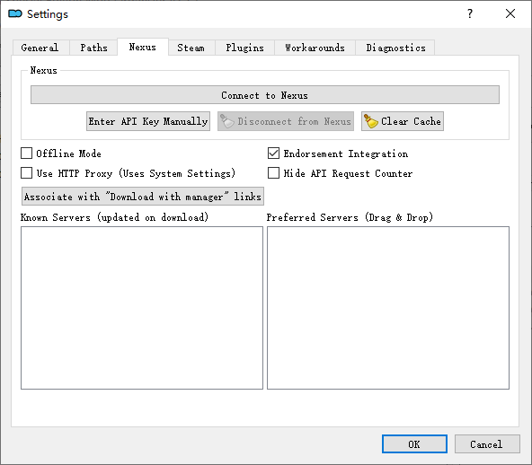
下载 Mod
下面我随便选择一个 mod 进行演示。
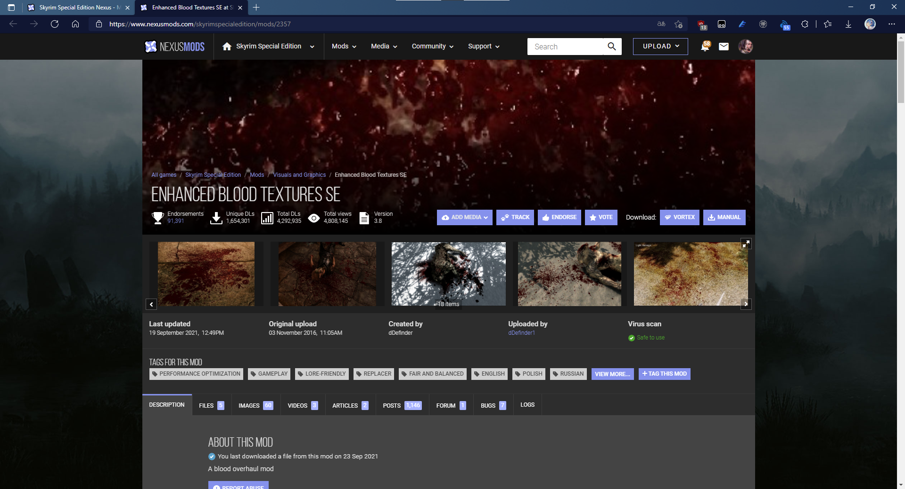
首先在下载任何 mod 之前，我都推荐看一看 DESCRIPTION，其中最重要的是 Requirements 这一节。因为有一些 mod 它是依赖于其他 mod 的，如果不满足这些前置要求，那么很可能这个 mod 就无法工作。
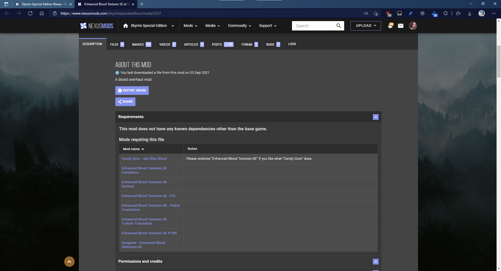
如上图所示，例子中的 mod 不需要任何前置。
然后点击进入 FILES 页中，一般来说，只需要下载 MAIN FILES 中的文件就行。在每个文件下面又会有两个按钮，第一个是 MOD MANAGER DOWNLOAD（通过管理器下载），第二个是 MANUAL DOWNLOAD（手动下载）。
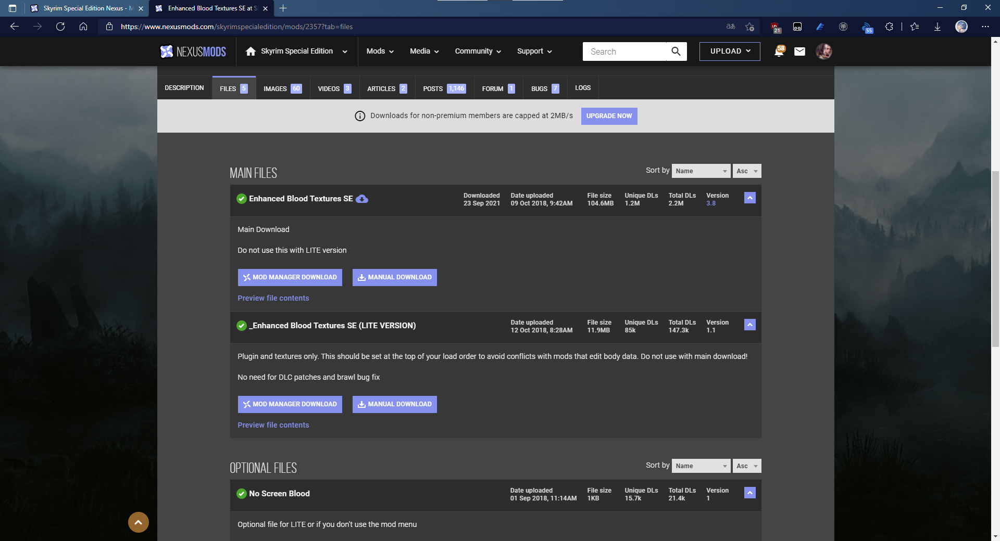
我们在 MO 中已经登录了 N 网账号，所以可以直接选择第一个，通过 MO 下载。这时候到 MO 中右边的 Downloads 菜单下，就可以看到下载的项目以及它的进度了。
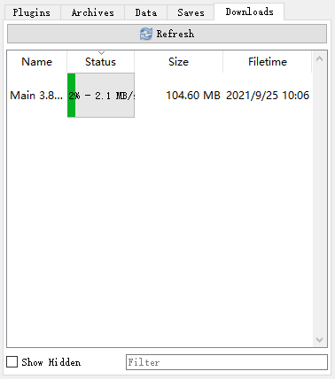
安装 Mod
下载完毕之后，我们双击这个 mod 就可以进行安装了。
有些 mod 是直接安装，而有些 mod，包括现在演示的这个，则是会弹出安装菜单，要求我们做一些选择然后安装。
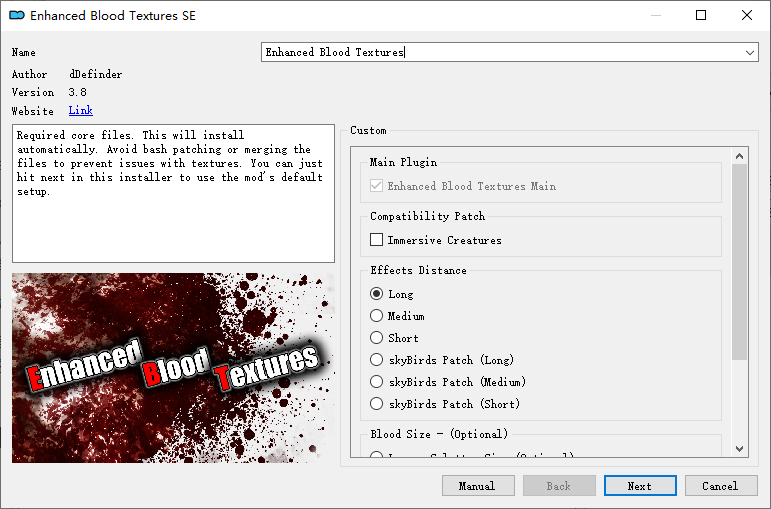
如果在上一步选了 Download Manually，或者是从其它地方下载下来的 mod，该如何安装呢？很简单，点击 MO 左上角这个按钮，选择 mod 文件进行安装即可。
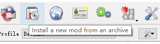
不过要注意，最好是把 mod 汇集保存着，之后如果想重新安装 mod 的时候就不会找不到了。
安装完成后，左边的列表中会出现新安装的 mod。如果想让这个 mod 生效，不要忘记在它的前面的复选框中打勾。
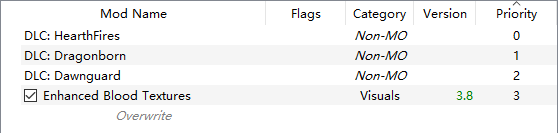
另外还有一件重要的事。有时某些 mod 它们的部分内容是会互相冲突的，这就需要我们手动选择保留哪个 mod 的内容。注意到列表下面的 Overwrite 字样了吗？它的意思就是位置越放在下面的 mod，它的内容的优先级越高，在发生冲突时就会覆盖掉在它上面的 mod 的内容。如果发生这种情况，mod 上会出现一个小图标，还是比较直观的。
Mod 排序
对 mod 进行排序是一件十分重要的事。未经排序的 mod 很容易产生冲突并使得游戏跳出。
MO 提供了很方便的自动排序的功能。在 MO 的右下角你可以看到加载的 mod 列表，而在列表上方有一个排序的按钮，点击它就能开始排序。每次添加一个新 mod，最好都进行一次排序操作。
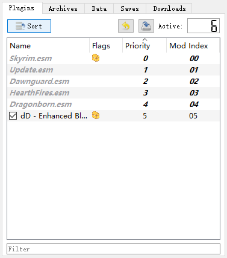
汉化
我们在安装时选择的语言是英文，所以对游戏进行汉化显然是必要的。
这里我推荐一个汉化 mod，质量挺高的：Unofficial Chinese Localisation by Reconquista Studios
SKSE
SKSE 的全称是 Skyrim Script Extender，顾名思义，它是一个脚本拓展工具。它是许多 mod 的前置，所以我们最好还是把它给安装上。
我们到官网找到 Current SE build 这一项进行下载。下载下来的应该是一个压缩包。
下载完毕后，解压缩。
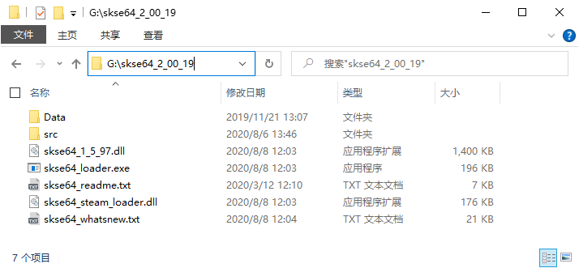
我们把除了 Data 文件夹之外的所有文件和文件夹直接拖入到游戏本体的根目录下。
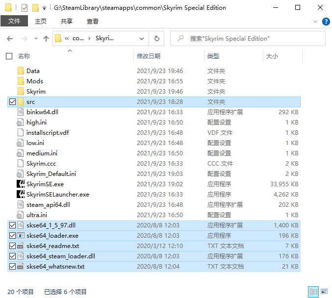
然后我们把压缩包作为一个 mod 交由 MO 进行安装。这时肯定会出现这么一个错误：
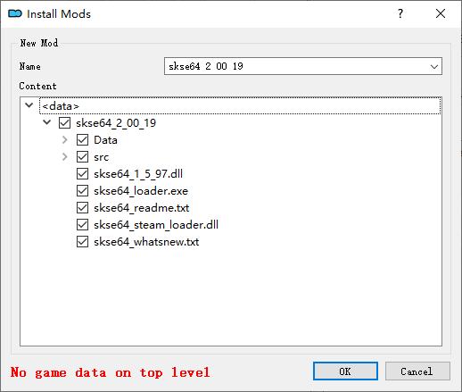
这是正常的。我们右键点击 Data 并选择 Set data directory 来修复错误：
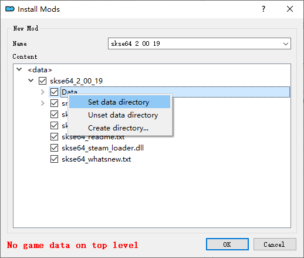
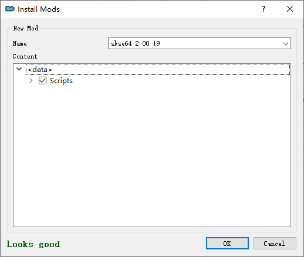
接着继续安装并勾选。
最后重启一下 MO，右上角的下拉选框里应该就会出现 SKSE 的选项了。我们之后就通过它来启动游戏。
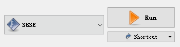
启用成就
使用 mod 会停用成就，所以需要安装这个 mod：Achievements Mods Enabler
推荐 Mod
以下这几个 mod 是我强烈推荐的，最好全部安装：
Unofficial Skyrim Special Edition Patch
修复游戏 bug
Unofficial Skyrim Special Edition Patch - Simplified Chinese Translation
USSEP 的汉化
Static Mesh Improvement Mod - SMIM
物品模型优化
Static Mesh Improvement Mod - SMIM - Simplified Chinese Translation
SMIM 的汉化
-
更好的血液
-
法术效果的优化
-
更好看的灰烬堆
-
人物美化
-
更加真实的力学
-
没有转圈倒下动画
No BS AI Projectile Dodge (Magic and Arrows) - Immersive Projectiles Nondetection of Enemies
阻止敌人瞬移躲开远程攻击
-
尸体碰撞
Better Dialogue Controls 和 Better MessageBox Controls
优化操作
-
更好的地图
-
瑟拉娜的美化
Caliente’s Beautiful Bodies Enhancer -CBBE-
👩
Feminine Argonian Textures (Chameleon and Lizard) 和 Feminine Khajiit Textures (Grey Cat and Leopard)
🐱🦎
Tempered Skins for Males - Vanilla and SOS versions
👨
总结
我比较喜欢保持游戏原本的感觉，而不想搞一些花里胡哨的东西。当然每个人都有自己的喜好，萝卜白菜各有所爱嘛。
按照上面的流程做一遍之后，能够获得比原版更好的体验，同时也保证了原汁原味。至于其它更多的东西，请自己慢慢研究，毕竟研究 mod 的过程本身也是充满乐趣的。
截图
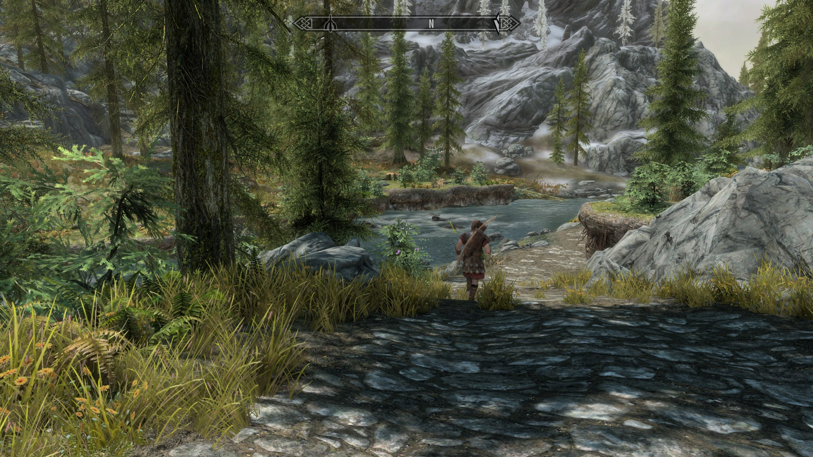
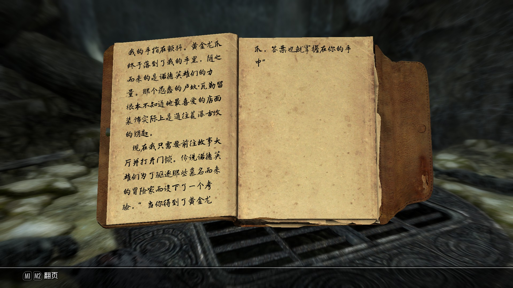
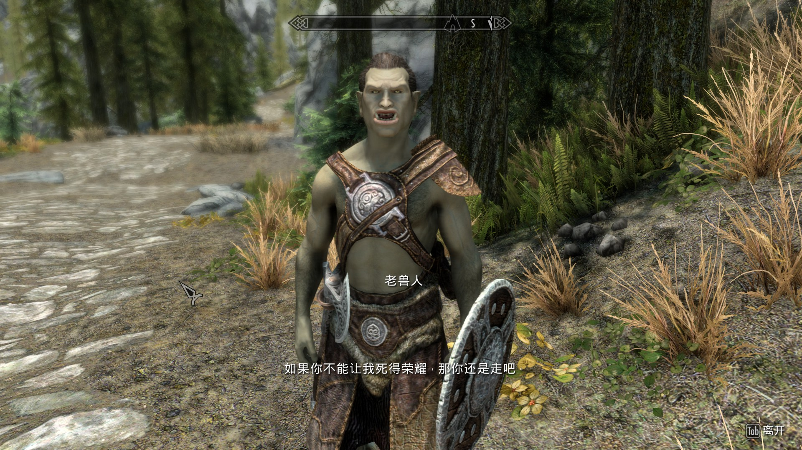
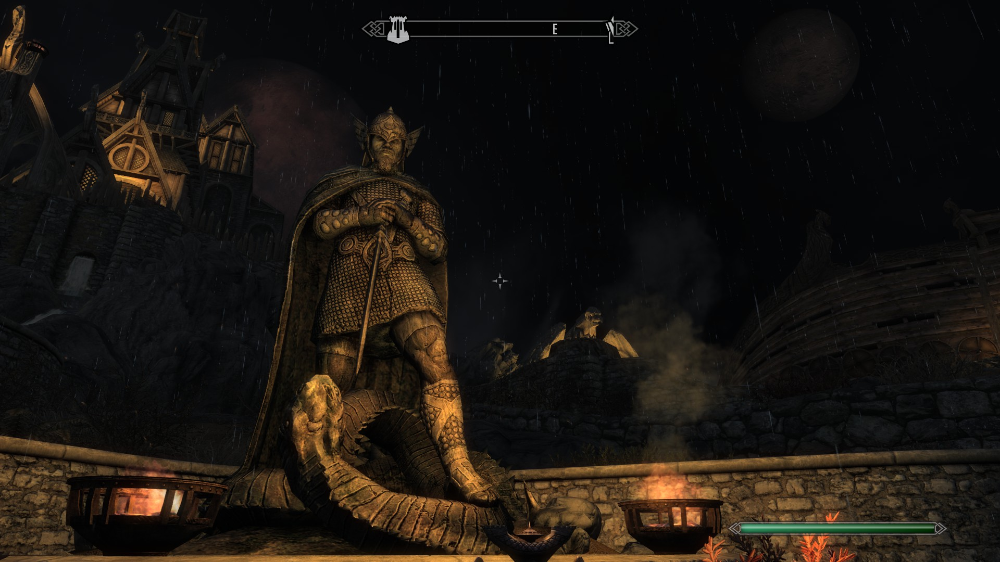
 wechat
wechat alipay
alipay